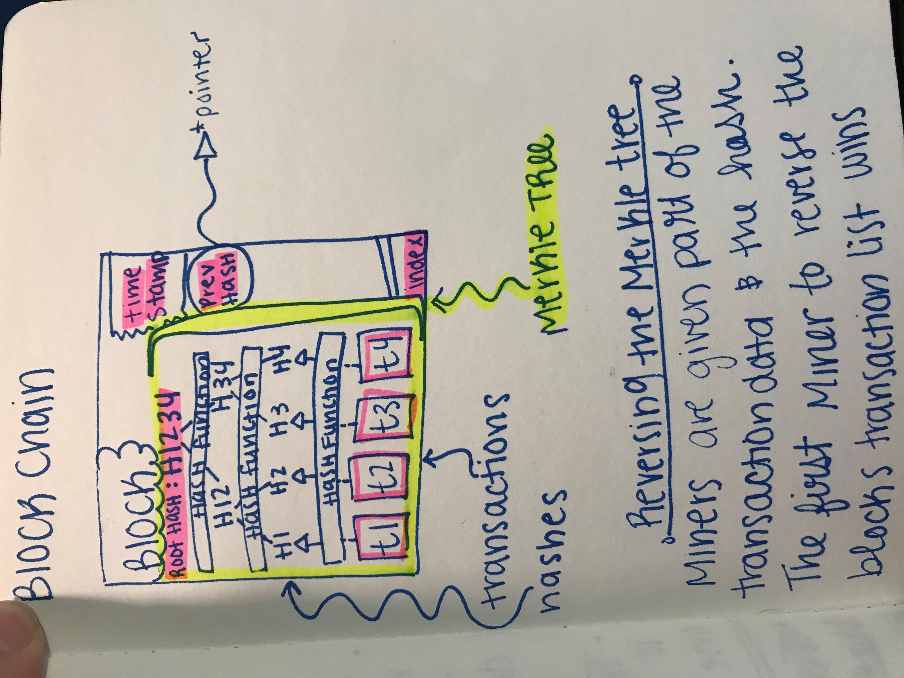

Cryptocurrencies are utilizing a secure data structure called blockchain. There are a vast many websites and articles dedicated to teaching our friends about computers or money or both. I am going to get technical and try to expound upon the computer science behind the trends.
Hash Functions
Last week I made a post that explained a checksum. A checksum is a type of hash function. With the hash, one can verify that the data has been unchanged. A hash should look nothing like the original data. The data can not be reconstructed with the hash alone because there are many possibilities that could yield the same hash.
Merkle Trees
A block contains a Merkle tree. A Merkle tree is a method of hashing many pieces of data into one root hash. Let’s say we have four pieces of data to hash. The raw pieces of data are feed into a hash function. Now we have 4 hashes. Hashes 1 and 2 are fed into another hash function together to yield hash12. Hashes 3 and 4 are treated the same way. There is a third hash function that brings hash12 and hash34 together to create a root hash, hash1234.
Validation via Merkle Trees
If any bit in the Merkle tree was altered, the root hash would not be correct. If the root hash is incorrect we can assume something is wrong with the block. When the block is corrupt there are many more miners with different versions of the same block. A blockchain uses an algorithm to score the validity of divergent paths. The most valid block can be selected above the others. Corrupt blocks become orphan blocks, meaning new blocks will never be spawned from them.
"Blockchain formation. The main chain (black) consists of the longest series of blocks from the genesis block (green) to the current block. Orphan blocks (purple) exist outside of the main chain." - Wikipedia

Picture provided by https://medium.com/@lhartikk/a-blockchain-in-200-lines-of-code-963cc1cc0e54
How does it all come together?
The block can be thought of as the following struct:

A blockchain is essentially a linked list of blocks with a very strong hashing function. For more in-depth information I highly recommend medium.com. There is a minimalistic code base for blockchain that is very easy to read and understand.
